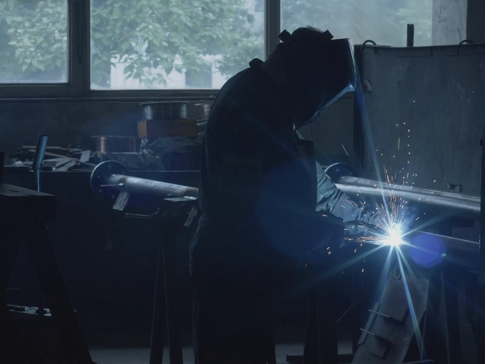
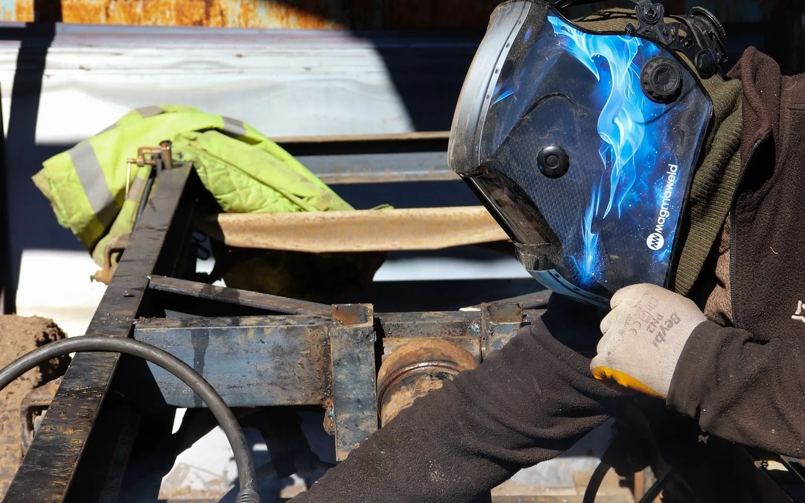
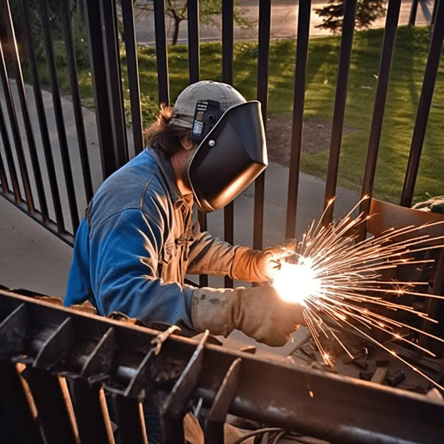
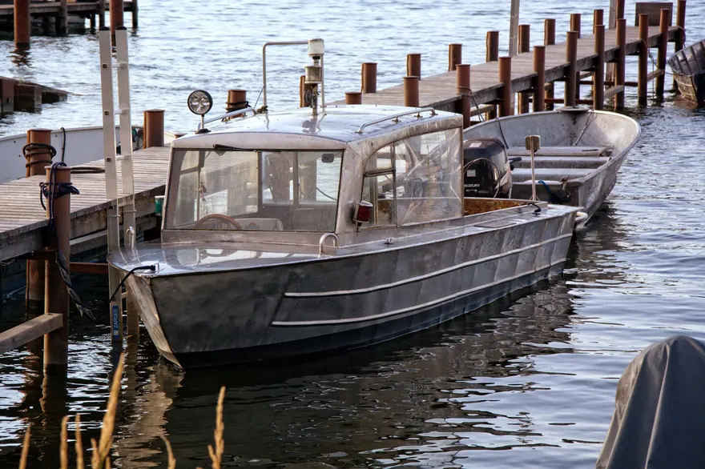

Home · About
About Our Mobile Welding Team in New Orleans
At Big Easy Mobile Welders, we bring expert welding to your doorstep across New Orleans for residential and commercial projects. Our welders are licensed and insured, and our mobile rigs are fully equipped.

We come to the jobWho Is Big Easy Mobile Welders in New Orleans?
At Big Easy Mobile Welders, we are a locally owned mobile welding company that brings expert welding to homes and businesses across New Orleans. Our licensed and insured welders handle repairs, fabrication and custom projects on site, with more than 20 years of experience and fully equipped mobile units behind the work.

No job is too big or too small for us, from a single gate hinge to a full custom fabrication.
From a quick repair to a full build, our skilled team handles a wide range of welding needs. We work across New Orleans and nearby areas, including Covington, Mandeville, Metairie and Abita Springs.

What Values Guide Our Mobile Welders in New Orleans?
Quality, safety and customer satisfaction come first on every job. We aim to deliver reliable, efficient and professional service every time. Pricing is transparent, with no hidden fees and a free estimate before work begins, so you know what to expect from the first call to the final weld.
Quality Workmanship
We aim to get every weld right the first time, from a quick repair to a complex custom fabrication.
Safety on Site
Our welders are licensed and insured and work with the right protective gear and equipment for the job.
Customer Satisfaction
We walk you through the finished work and stay a call away for follow-up support.
No Hidden Fees
Every job starts with a free estimate, so there are no surprise costs.
What Mobile Welding Services Does Our New Orleans Team Provide?
Our team handles pipe welding, arc welding, gate welding and window welding, plus custom welding and metal fabrication. Every service is mobile, so we bring the equipment to your home or business anywhere in our New Orleans service area instead of asking you to haul metal to a shop.

Pipe Welding
Pipe and pipeline repair on site, with stick and gas-shielded processes matched to the pipe.
View pipe welding →
Arc Welding
Shielded and non-shielded arc welding for commercial and residential customers.
View arc welding →
Gate Welding
Gate repairs and custom gates in steel or aluminum, with materials and tools covered in your estimate.
View gate welding →
Window Welding
Repairs for rusted and worn metal window frames, carried out at your home.
View window welding →
Custom Welding
Custom ironwork, estimated before we start so we arrive with the right equipment for the job.
View custom welding →
Metal Fabrication
Fabrication of all types of metal for residential, commercial and industrial settings.
View metal fabrication →
How Do Our New Orleans Welders Work With You From Start to Finish?
We keep it simple. You request a free quote, we schedule a time that suits you, and our welders arrive with every tool needed to do the work on site. When the job is done, we walk you through it, offer easy payment options and stay a call away for any follow-up.
Request a Free Quote
Reach us through our website, by phone or by email, and tell us about the repair or custom fabrication.
Schedule Your Service
Once you approve the quote, we book a time that is convenient for you.
On-Site Welding
Our licensed and insured welders come to your location with all the tools and equipment.
Review and Follow-Up
We walk you through the finished work, offer easy payment options and stay a call away.
 The rig comes to you
The rig comes to youWhat Do You Get When You Hire Our New Orleans Welders?
You get licensed, insured welders with more than 20 years of experience, a free estimate with transparent pricing, and a fully equipped mobile unit at your property. We stand by our work after the job too, with follow-up support if you need an adjustment or more help.
20+ Years of Experience
Our team has built a reputation for reliable, fast and cost-effective welding across the New Orleans area.
Licensed and Insured
Our welders are licensed, insured and highly trained for simple repairs and complex custom work.
Free Estimates
You get a free, no-obligation quote tailored to your project, with no hidden fees.
Satisfaction Guaranteed
We deliver high-quality welding with a quick turnaround and stand by every job we finish.
Where Does Our Mobile Welding Team Work Around New Orleans?
Our welders work in New Orleans and 11 nearby cities: Metairie, Kenner, Gretna, St. Rose, LaPlace, Slidell, Mandeville, Covington, Madisonville, Hammond and Baton Rouge. We drive a fully equipped mobile unit to your property, so the same on-site service reaches every city on the list.
- New Orleans
- Metairie
- Kenner
- Gretna
- St. Rose
- LaPlace
- Slidell
- Mandeville
- Covington
- Madisonville
- Hammond
- Baton Rouge
Not sure we cover your street?
Request a free estimate or call us, and we will confirm before we book the job.
Where Our Rigs Roll
Schematic, not to scale. New Orleans and the 11 nearby cities we serve.
Where Can You Learn More About Our Mobile Welding Team in New Orleans?
Browse our full list of welding services, read what customers say about our work, check the cities we cover, or dig into our blog for practical guides on gates, rust and marine welding in New Orleans. Every page links back to a free estimate when you are ready to book.

All Our Welding Services
Pipe, fence, gate, railing, window and arc welding, custom work and metal fabrication.
Open →
What Customers Say
Reviews from homeowners and businesses around New Orleans.
Open →
Welding Guides
Practical guides on gates, rust, marine work and more.
Open →What Do People Ask About Our Mobile Welders in New Orleans?
Here are straight answers to the questions New Orleans homeowners and businesses ask most about our team before they book a mobile welder: who we are, the work we take on, how experienced our welders are, what equipment we bring and which areas we cover.
Are you a locally owned welding company?
Yes. We are a locally owned mobile welding company that has served New Orleans residents for many years. We bring our equipment to homes and businesses across the city and nearby areas, so the welding happens where the metal is.
Do you handle residential and commercial welding?
Yes. We provide mobile welding for both residential and commercial projects, from gate and railing repairs at a home to fabrication and repair work at a business. Whatever the size of the job, our team can take it on.
How experienced are your welders?
Our team brings more than 20 years of experience. Our welders are licensed, insured and highly trained, and they handle everything from simple repairs to complex custom fabrications on site.
Do you bring your own welding equipment?
Yes. Our fully equipped mobile welding units carry the tools the job needs, so you do not have to transport heavy materials to a shop. We set up on site and work with minimal downtime for you.
Do you take on custom projects as well as repairs?
Yes. Our skilled team handles repairs, fabrication and custom projects, from fixing a broken gate to building a custom metal piece, and we do the work on site at your property whenever the job allows.


Book Your Free Mobile Welding Estimate
Tell us what needs welding, and we will bring the rig to your door anywhere in the New Orleans area.